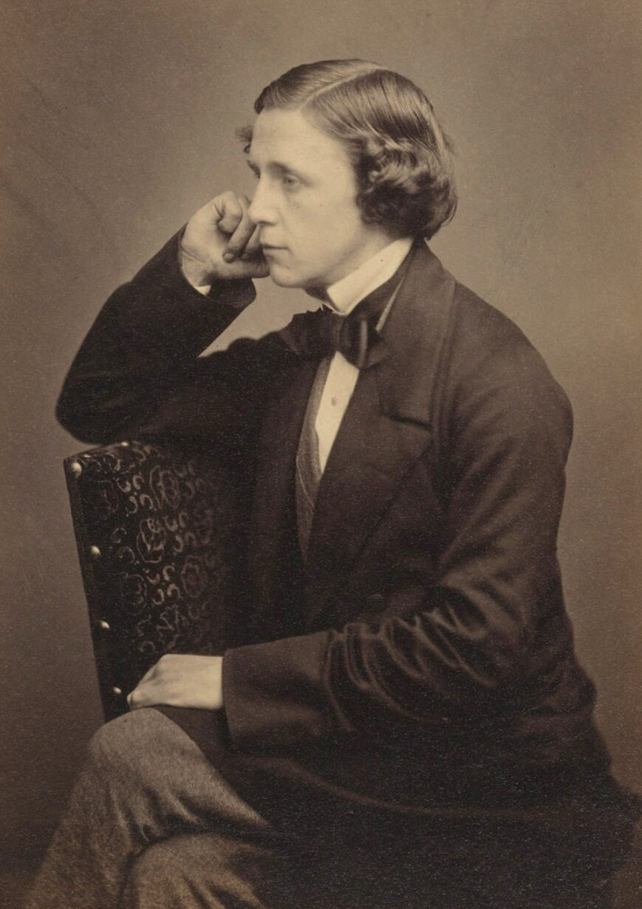

Charles Lutwidge Dodgson mas conocido como Lewis Carroll. El joven Charles inició su educación en su propia casa. Las listas de sus lecturas conservadas por la familia, atestiguan su precocidad intelectual: a los siete años leyó The Pilgrim’s Progress de John Bunyan. Se ha dicho que sufrió un trauma infantil cuando se le obligó a contrarrestar su tendencia natural a ser zurdo; no hay, sin embargo, ninguna evidencia de que haya sido así. Sí sufrió de un tartamudeo que tendría efectos perjudiciales en sus relaciones sociales durante toda su vida. También padeció sordera en el oído derecho a consecuencia de una enfermedad. A los doce años fue enviado a una escuela privada en las afueras de Richmond, donde parece que se integró bien, y en 1845, fue trasladado a Rugby School, donde fue evidentemente un tanto infeliz, según él mismo escribió algunos años después de abandonar el lugar. Fallecio el 14 de enero de 1898.
